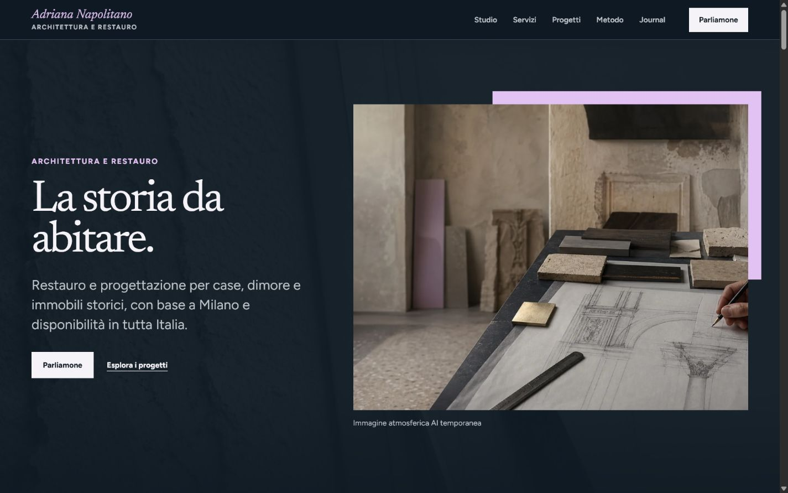
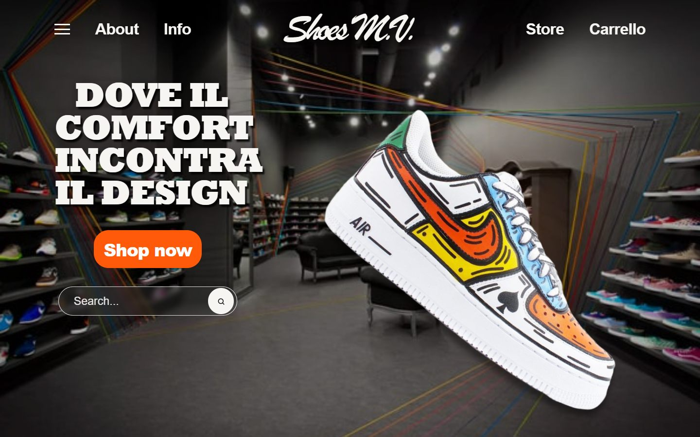
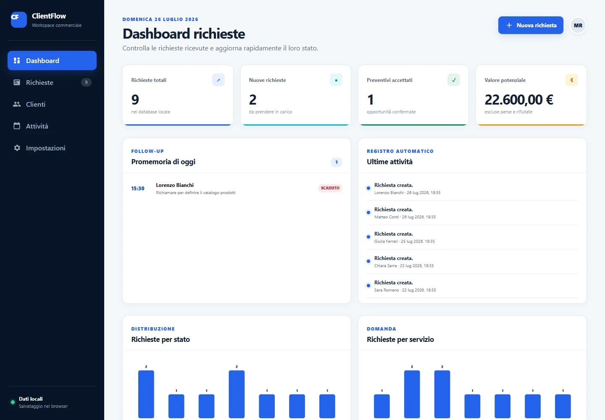
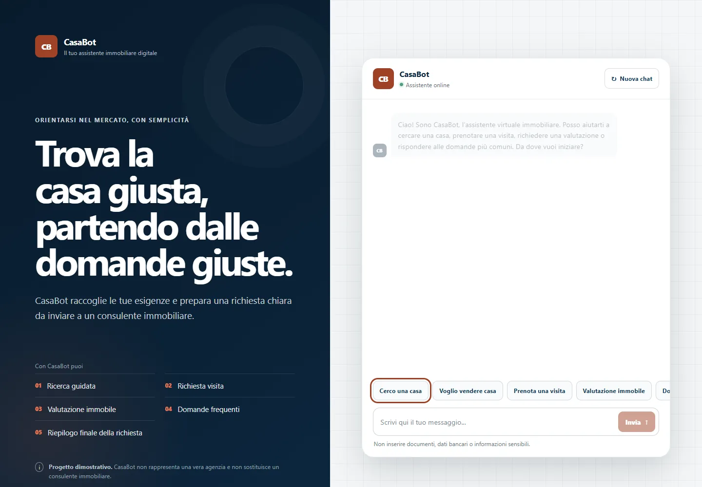
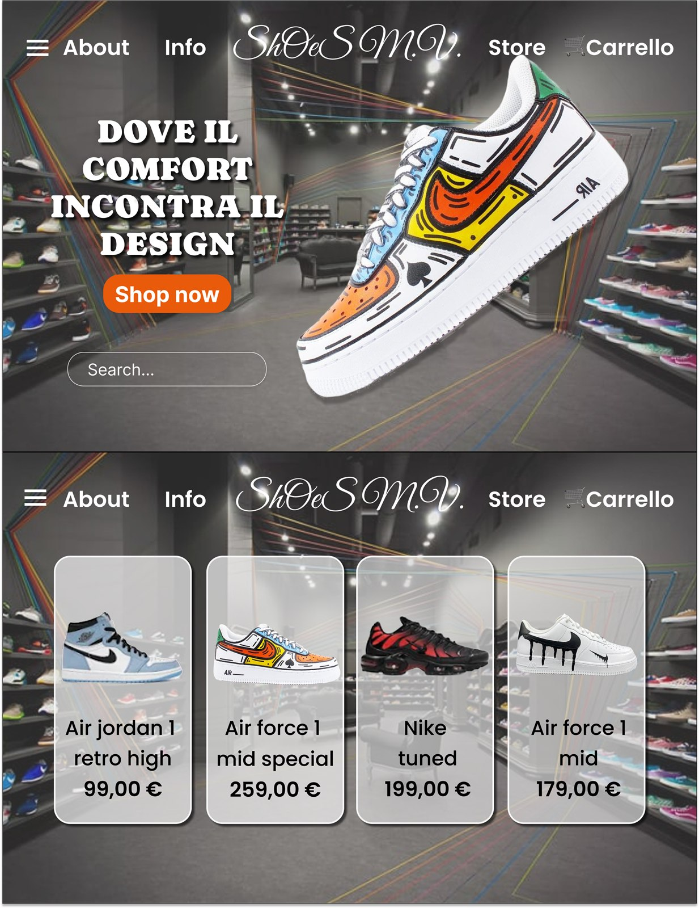
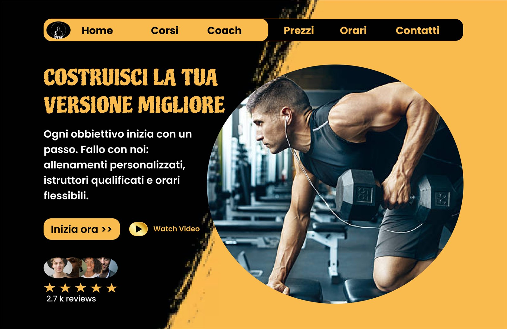

Frontend Development
Sviluppo interfacce responsive con HTML, CSS, JavaScript, React e Next.js, scegliendo lo stack in base alla complessità reale.
Progetto e sviluppo siti web, landing page e piccole web app responsive, trasformando idee e prototipi Figma in prodotti digitali funzionanti.
Uso strumenti AI e automazioni per rendere il processo più efficiente, mantenendo il controllo su codice, usabilità, accessibilità e qualità finale.
Sto costruendo una nuova direzione professionale nel digitale, con un percorso junior che unisce sviluppo frontend e progettazione UI/UX.
Parto da obiettivi e contenuti, progetto interfacce in Figma e le trasformo in siti, landing page e piccole web app responsive. Uso l’AI come supporto per ricerca, prototipazione e debugging, poi verifico, modifico e testo il risultato.
Cerco opportunità junior in cui crescere su frontend e UI/UX. Continuo a studiare React, Next.js, TypeScript, accessibilità e inglese tecnico.
Sviluppo interfacce responsive con HTML, CSS, JavaScript, React e Next.js, scegliendo lo stack in base alla complessità reale.
Progetto in Figma wireframe, flussi, componenti e layout responsive, con attenzione a gerarchia e semplicità d’uso.
Realizzo dashboard, form evoluti e interfacce con stato, API o dati locali, documentando limiti e comportamento reale.
Integro Gemini o strumenti AI quando servono al prodotto e li uso per velocizzare il lavoro, mantenendo revisione e controllo umano.
Undici lavori ordinati dal più rappresentativo al più semplice: tre progetti principali, siti, web app, sperimentazione 3D, tre concept UI/UX in Figma e un esercizio Practice.
Ogni lavoro appartiene a una sola tipologia. “Principali” raccoglie Adriana, English Quiz Lab e C.M. Pulizie.
11 progetti mostrati

Sito professionale multidisciplinare
Identità digitale e sito multipagina per una professionista reale, progettati per trasformare materiali accademici dichiarati in una futura presenza professionale.

Web app educativa full-stack con AI
Piattaforma per creare, revisionare e svolgere quiz di inglese assistiti da AI, con flussi distinti per docenti e studenti.

Sito per local business
Sito multipagina progettato in Figma e sviluppato per rendere servizi, contatti e richieste di preventivo più facili da consultare.

Demo sperimentale React e Three.js
Evoluzione interattiva di un concept Figma per sperimentare profondità, movimento e presentazione prodotto sul web.

Dashboard CRM frontend
Dashboard dimostrativa per organizzare clienti, richieste, stati commerciali, note e promemoria.

Landing page fitness
Landing page per una palestra immaginaria, estesa da una hero Figma a un percorso commerciale responsive e accessibile.

Web app conversazionale rule-based
Assistente immobiliare in JavaScript che raccoglie preferenze e costruisce una richiesta strutturata senza servizi AI esterni.

Fase iniziale UI/UX di Shoes M.V.
Il prototipo Figma da cui è nata la successiva demo interattiva Shoes M.V.; non è un progetto duplicato.
Materiale di processo collegato
Prototipo usato per definire struttura e componenti prima dello sviluppo del sito C.M. Pulizie.

Materiale di processo collegato
Concept della hero che ha guidato l’estensione della landing page FitZone.

Esercizio frontend
Form responsive realizzato per consolidare HTML semantico, CSS e validazione nativa.
Nessun progetto trovato per questo filtro.
Il progetto più completo del portfolio: strategia, UI/UX, frontend, SEO, accessibilità, documentazione e pubblicazione.
Una professionista reale aveva bisogno di trasformare formazione e progetti iniziali accademici in una presenza credibile, senza presentarli come incarichi o opere costruite.
Ho curato strategia, architettura informativa, UI/UX, design system e sviluppo statico con Next.js, React, TypeScript e CSS Modules.
La build comprende 21 route statiche, quattro pagine progetto e tre case study completi, con SEO tecnica, sitemap, robots, Open Graph e dati strutturati.
Il sito è dimostrativo e pensato per evolvere in una presenza professionale reale. Modulo e analytics sono predisposti, ma non trasmettono dati e non sono collegati a servizi esterni.
Capisco il messaggio, il pubblico e l'obiettivo della pagina.
Organizzo contenuti, sezioni, call to action e flusso utente.
Creo interfaccia, colori, componenti, spaziature e gerarchia visiva.
Trasformo il design in codice, usando strumenti AI come supporto e verificando ogni risultato.
Controllo responsive, link, SEO base e pubblico online con GitHub Pages.
Competenze organizzate per area e descritte in modo trasparente, senza percentuali arbitrarie.
Tecnologie usate nei progetti pubblicati, con React, Next.js e TypeScript ancora in consolidamento.
Progettazione dell’interfaccia e verifica del flusso prima e durante lo sviluppo.
Basi applicate a web app contenute; non un profilo backend specialistico.
Strumenti usati come supporto, con revisione del codice e verifica del risultato finale.
Sto costruendo un profilo pratico tra sviluppo frontend e UI/UX, applicando ciò che studio a siti, landing page e web app pubblicate. Uso strumenti AI come supporto al processo, mantenendo controllo su codice, accessibilità e risultato finale.
Sono disponibile per ruoli junior frontend e UI/UX, oltre che per piccoli progetti web coerenti con le competenze mostrate nel portfolio.